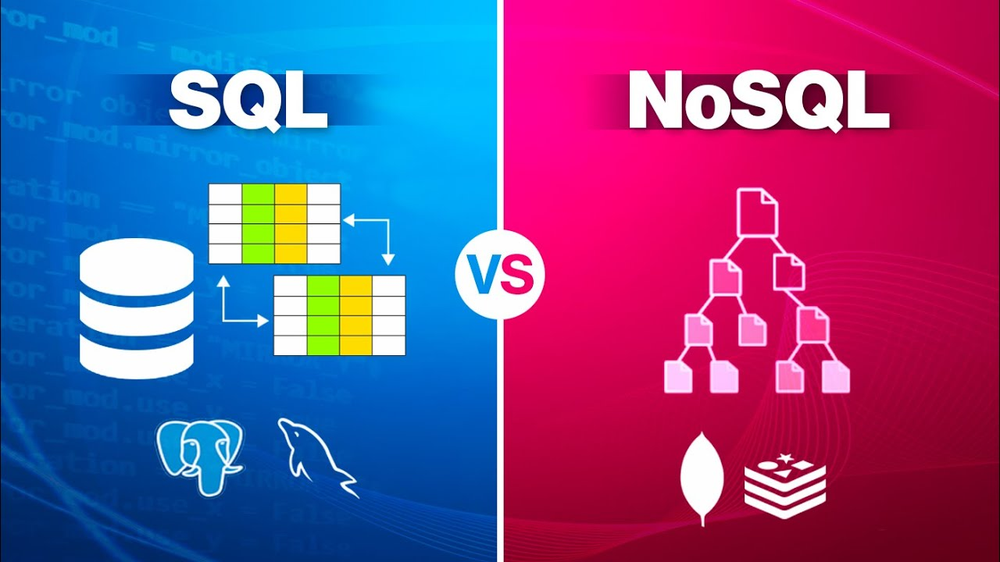

Below are some of my favorite projects that I’ve worked on:
Predicting Turbine Failure Case Study
Goal: This project involved providing the company MidAmerican Energy useful insight into the wind turbines that have a high likelihood of failure.
Process: In order to provide this kind of insight, the members of my team and I worked on cleaning and then later querying & merging the data from a series of csv files. We then created a variety of data visualizations to pinpoint key patterns, effectively guiding us in the direction of which modeling techniques to use.
Impact: Our team's results were used at the company's Data Science team to shut down the turbines likely to fail well in advance, reducing costs by 15%
Key Areas: Data Analytics, AI
Resume and Cover Letter Feedback Application
Goal: This project involved developing an application to offer the user tailored feedback on their resume or cover letter.
Process: The feedback takes into account the kind of occupation for which the user applied. The feedback was able to be tailored using several Natural Language Processing (NLP) techniques.
Impact: The implementation of several NLP techniques in this project were scalable and adaptable to a variety of different users, providing clear guidance on how the user can improve their resume or cover letter.
Key Areas: AI, Software Development

Workout Planner Application
Goal: This project involved creating an application to enable the user to create personalized workouts.
Process: A given workout takes into account the user's fitness goals, level, and access to certain equipment. These parameters were kept track of in the backend when querying SQL databases, so that the user can select the appropriate exercises for their workouts in the frontend. The user's preferences would be stored in a NoSQL database, so that their information is automatically saved whenever they login.
Impact: The integration of both the backend and frontend successfully kept track of all the users' unique workouts, allowing them to stay focused towards their goals.
Key Areas: Data Analytics, Software Development


If you want to get an in-depth look at the projects above and find out about other projects I've worked on, click here to navigate to my GitHub.